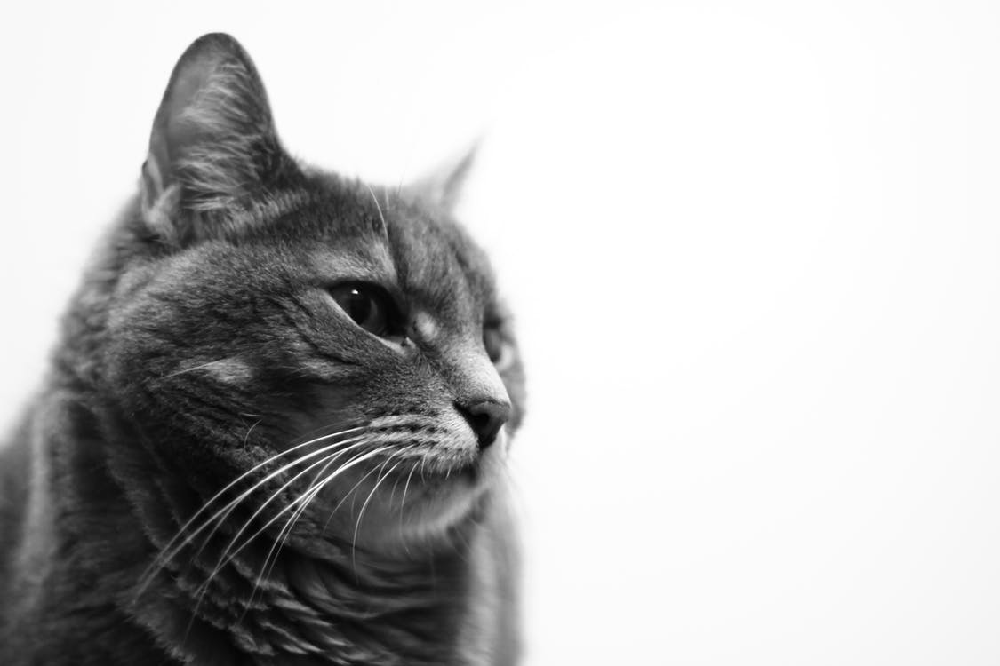

猫抓沙发
1、定期为猫咪修剪指甲。猫咪磨爪就是为了磨指甲，定期修剪可以减少猫咪对家具的破坏，同时也不会抓伤人
2、给猫咪准备可以给她抓的东西。这是最重要的原则，既然猫咪的天性是不能改变的，那么禁止猫咪抓一个地方的同时要给猫咪提供另一个可以磨爪的地方，这个非常重要!猫抓板，大部分猫咪都很喜欢用。另外，一些天然材质做的草垫子也是有些猫咪的最爱，有的猫咪会很自觉地在上面磨爪的。而现在在找宠物商城就能买到，十分方便。
3、准备一把水枪，在她去抓沙发的时候教育她。猫咪非常害怕突如其来的“袭击”。当猫咪准备抓沙发的时候用水枪“滋”他一下，猫咪会非常害怕的逃走。多使用几次这个方法，就会让猫咪形成一种条件反射：去沙发那里磨爪=被未知的东西突然袭击，自然而然猫咪就会放弃沙发了。这个办法曾经让一只已经有7年沙发磨爪史的猫咪改掉了坏习惯，在搬家后沙发终于安全，水枪的喷射对猫咪来说是没有什么伤害的，只是起到警示的作用。不过要注意的是，不要将水滋到猫咪的耳朵里。
4、在沙发上她喜欢抓的地方喷上柠檬水。柠檬水的味道猫咪不喜欢，同样桔子皮的水猫咪也很讨厌。其他的不受猫咪欢迎的味道还有花露水、风油精等。猫咪去磨爪的时候闻到这些味道，一定是会避开的。
注意事项 解决猫咪抓沙发问题的小窍门：
1.在给它提供抓的地方的同时，在沙发猫喜欢抓的部位全贴上双面胶带纸。猫不喜欢那种粘粘的感觉。
2.懒人的简单办法：沙发上放一本厚杂志，猫抓沙发时猛然用杂志拍沙发，在它面前拍，它立刻吓跑，几次见效。